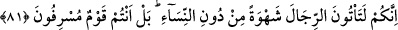
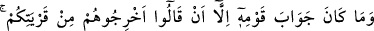
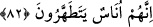

kınamıştır. Çünkü, ikincisi daha kötüdür.
81. Çünkü siz, şehveti tatmin için kadınları bırakıp da şehvetle erkeklere
yanaşıyorsunuz. Doğrusu siz taşkın bir milletsiniz.”
“Siz” Allah’ın size helal kıldığı “kadınları bırakıp şehvetle erkeklere
gidiyorsunuz.” Bu ayet, bir önceki ayette zikredilen fuhşun ne olduğunu açıklamaktadır.
Nâfi ve Hafs, ayetin başındaki kelimeyi “inneküm” diye okumuşlardır. Diğerleri ise
soru cümlesi olarak “einneküm” diye okumuşlardır. Bu okuyuşa göre cümlenin mânâsı:
“...erkeklere mi gidiyorsunuz?” olur.
Ayette oğlanların ve sakalı bitmemiş gençlerin değil de erkeklerin zikredilmesi,
azarlamanın şiddetini artırmak içindir. Onların bunu, sırf şehvetlerini teskin için
yaptıklarının belirtilmesi ise onları, tamamen hayvanlıkla vasfetmek maksadıyladır.
Burada ayrıca akıllı kimseyi cinsî ilişkiye sevkeden sebebin şehvetini teskin değil,
çocuk sahibi olmak ve neslinin devamını sağlamak olduğuna da dikkat çekilmektedir.
“Doğrusu siz, haddi aşan bir kavimsiniz.” Böylece onların yaptıkları kötülük
reddedildikten sonra, onları böyle kötülüklere iten sebebin bildirilmesine geçilmiştir.
Bu da onların her hususta israfı ve haddi aşmayı huy edinmiş bir kavim olmalarıdır.
Nitekim şehvetlerini giderme konusunda da israfa kaçmışlar ve Allah’ın bu ihtiyacı
meşru yolla görmeleri için tâyin ettiği kadınları bırakıp erkeklere yanaşmışlardır.
82. Kavminin cevabı: Onları (Lût’u ve taraftarlarını) memleketinizden çıkarın;
çünkü onlar fazla temizlenen insanlarmış! demelerinden başka bir şey olmadı.
“Kavminin cevabı: “Onları” Lût’u ve taraftarlarını “kentinizden” Sodom’dan
“çıkarın, çünkü onlar, fazla temizlenen insanlarmış!” demekten başka bir şey
olmadı.” Bu sözle, mü’minleri beldelerinden çıkarmaya karar verdiklerini belirtmişler
ve “bunlar, fuhşiyattan uzak kalmak isteyen insanlarmış.” diyerek onlarla alay
etmişlerdir.
Kavminin bu sözünün Lût (a.s.)’ın söylediklerine cevap olması mümkün değildir.
Onlar bu sözü birbirlerine söylemişlerdir. Zaten böyle diyerek cevap vermeyi de
kasdetmiş değillerdir. Yine de bu boş ve çirkin sözü ona karşı söylemişlerdir. Akla ilk
gelen şekliyle bu sözle kavminin Lût (a.s.)’ın dâvet ve nasihatına doğrudan bu cevabı